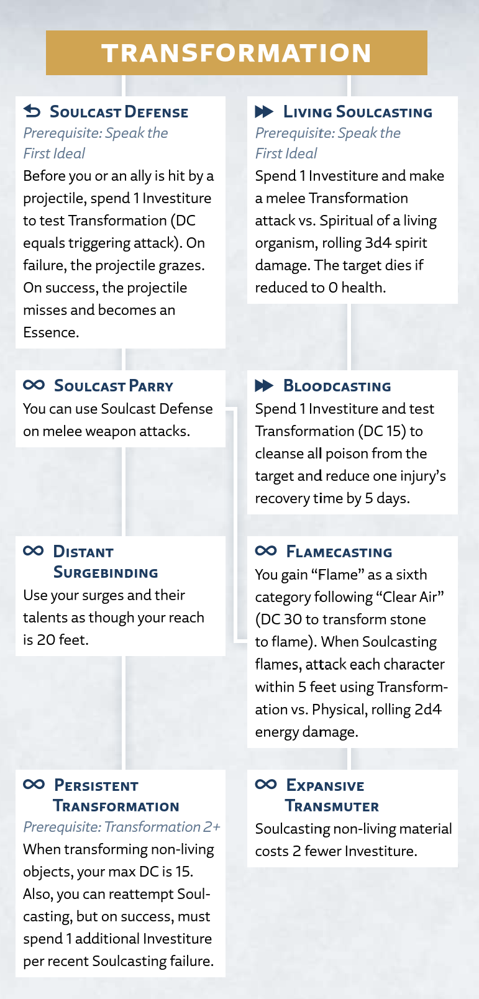

Transformation
Willpower
The surge of Transformation transforms one material into another. Often called Soulcasting, this surge shifts your perception of the object you want to transform, allowing you to see and communicate with its Cognitive aspect.
Transformation Surge
Radiant Orders: Elsecaller, Lightweaver
Activation: ▶▶
To Soulcast a material, choose a non-living object or portion of a surface within your reach and make a Transformation test (see "Transformation DC" below). To do so, you must have a hand free and touch the target. This target can't exceed the surge size for your ranks in Transformation.
You can't use this surge on Invested objects (like Shardplate) or objects that have been infused with Stormlight (like infused spheres or objects affected by surges). Additionally, you can't initially Soulcast living materials, including characters and plants (though talents can allow you to do so).
Transformation DC. Soulcasting one material into a similar one is relatively simple, but the more you change its Essence, the more skill is required. Each material falls into one of six categories:
1. Solids like metal, stone, and crystal
2. Organic matter like flesh, bone, and pulp
3. Liquids like blood, water, and oil
4. Vapors like smoke and gas
5. Clear air
6. Flame (only available to characters with the Flamecasting talent)
Determine which category best corresponds to your original material, then choose what category you want to transform the material into. If you're transforming it into a material no more than one category away, make a DC 10 Transformation test. This DC increases by 5 for each additional category away, as shown on the Transformation Difficulty Classes table.
Transformation Difficulty Classes
| Solids | Organics | Liquids | Vapors | Clear Air | Flame* | |
|---|---|---|---|---|---|---|
| Solids | 10 | 10 | 15 | 20 | 25 | 30 |
| Organics | 10 | 10 | 10 | 15 | 20 | 25 |
| Liquids | 15 | 10 | 10 | 10 | 15 | 20 |
| Vapors | 20 | 15 | 10 | 10 | 10 | 15 |
| Clear Air | 25 | 20 | 15 | 10 | 10 | 10 |
| Flame* | 30 | 25 | 20 | 15 | 10 | — |
*The Flame category is only available to characters with the Flamecasting talent.
Successful Transformation. On a successful Transformation test, you compel the material to transform. Spend Investiture equal to the ranks required to transform an object of that size: 1 Investiture for a Small object, 2 Investiture for a Medium one, 3 Investiture for a Large one, 4 Investiture for a Huge one, and 5 Investiture for a Gargantuan one. Your target transforms into that substance.
Failed Transformation. On a failure, you don't transform your target and you don't spend Investiture on the attempt. Since you've failed to compel that material to transform, you can't attempt to Soulcast that same object again during this scene.
Using Transformation
In addition to the basic surge rules above, this section provides more guidance on using or interacting with this surge in your game.
Transformation on Others
While you can't Soulcast living characters with the basic Transformation surge, you can creatively use your abilities to be useful and dangerous in combat. You might create obscuring fog out of thin air, giving attackers a disadvantage. You could create cover to shield behind. You might even turn the ground beneath your opponent's feet into liquid, causing them to fall Prone.
It's up to you and your GM to resolve such creative uses. In general, if your Soulcasting requires the opponent to make a test (such as to stay on their feet), their DC is equal to your Transformation test result.
Peering Into Shadesmar
The surge of Transformation grants a limited ability to look into the Cognitive Realm. To do so, you can spend 2 Investiture and Use a Skill to make a Transformation test. On a success, you can use one effect from the Transportation surge (see "Transportation") to perceive 10 feet around you in the corresponding location in Shadesmar.
Transformation Talent Tree
Transformation Talents
The following talents, presented here in alphabetical order, appear in the Transformation talent tree for the Elsecaller and Lightweaver paths.
Bloodcasting
Prerequisite: Living Soulcasting talent
Activation: ▶▶
You've practiced techniques for Soulcasting blood, allowing you to cleanse the body of poison and to speed recovery from injuries.
While touching a character, spend 1 Investiture and make a DC 15 Transformation test to cleanse their blood. On a success, the effects of any poison end for the target, and you can reduce the recovery time of one of their injuries by 5 days.
The GM can spend ✧ from this test to reduce the target's maximum health by twice their level until after the target's next long rest.
Distant Surgebinding
Prerequisite: Soulcast Parry talent
Activation: ∞
You can Soulcast from a greater distance.
You can use your surges and their talents as though your reach is 20 feet, and you don't need to touch the target.
Expansive Transmuter
Prerequisite: Flamecasting talent
Activation: ∞
You've become so powerful that you can Soulcast larger objects with much greater efficiency.
When you Soulcast non-living material, reduce the Investiture cost by 2 (to a minimum of 1 Investiture). For example, it now costs you only 1 Investiture to Soulcast either a Small, Medium, or Large object.
Flamecasting
Prerequisite: Soulcast Parry talent
Activation: ∞
You've learned the difficult art of Soulcasting Essences directly into instantaneous bursts of flame.
On your surge's list of Soulcasting materials, you gain a sixth category called "Flame," which follows the entry for "Clear Air." When Soulcasting a material that's five spaces away on this expanded list, the DC is 30 (such as when Soulcasting stone into flame).
When you Soulcast an object into flame, the flames last for only a moment before dissipating. However, before they do, they can catch flammable objects on fire.
Additionally, when you Soulcast an object into flame, use the result of that Transformation test to make an attack as ▷ against the Physical defense of each character within 5 feet of the Soulcast object. Roll 2d4 energy damage. The size of these damage dice increases with your ranks in Transformation; at 2 ranks, roll 2d6 (instead of 2d4), and so on.
Living Soulcasting
Prerequisite: Speak the First Ideal
Activation: ▶▶
You've mastered the subtleties of affecting living flesh with Soulcasting.
Spend 1 Investiture and make a melee Transformation attack against the Spiritual defense of a character, plant, or other living organism within your reach. Roll 3d4 spirit damage. The size of these damage dice increases with your ranks in Transformation; at 2 ranks, roll 3d6 (instead of 3d4), and so on.
If this reduces the target to 0 health, they die, and you transform their body into your choice of material without spending additional actions or Investiture.
Persistent Transformation
Prerequisite: Transformation 2+; Distant Surgebinding talent
Activation: ∞
Your force of will is so great that objects have a hard time denying you.
When transforming a non-living material, your Transformation test has a maximum DC of 15.
Additionally, after you fail to Soulcast an object, you can attempt to do so again during the same scene. When you succeed on this test, you must spend 1 additional Investiture per time you failed to Soulcast that object during this scene; if you can't spend that much Investiture, the object isn't transformed.
Soulcast Defense
Prerequisite: Speak the First Ideal
Activation: ⟲
You Soulcast near-instinctively, able to transform projectiles in flight.
Before you or an ally within your reach is hit by a projectile from a ranged attack, you can use this reaction and spend 1 Investiture to make a Transformation test. The DC of this test equals the triggering attack's test result; you can choose whether to use this reaction after you learn the DC.
On a failure, the attack grazes instead of hitting. On a success, the attack instead misses and can't graze, and you transform the projectile into a material of your choice. If you choose a non-solid material, this destroys the projectile.
Soulcast Parry
Prerequisite: Soulcast Defense talent
Activation: ∞
You can use Soulcasting to defend against even more immediate threats.
You can now use Soulcast Defense on melee weapon attacks as well as ranged ones.